Printable (US Letter + A4) and hyperlinked iPad PDF, Sunday or Monday start.
Every 2027 date already filled in. Just 3 pages a month: a month calendar with "This month's 3 things", a habit & mood tracker, and a month reset. Plus a Brain dump page, a Minimum version page for low-energy days and 4 focus phone wallpapers.
From Three Things Planners, the planner imprint of Hustle Studio.
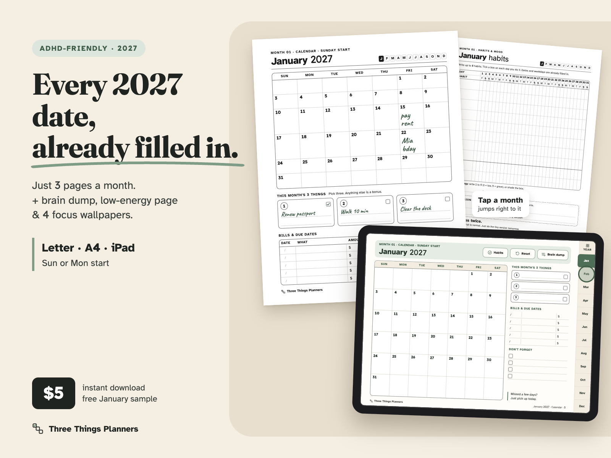
$5.00 USD. One-time payment, instant download. No subscription.
Buy now: $5 Free January sample (PDF, no email needed)Try it first, free, no email needed: the January sample (PDF, US Letter, 4 pages) has the January month calendar in Sunday start and Monday start, the habit tracker and the month reset. No signup. Print a page before you buy.
14-day refund, no questions asked. Not right for you? Email chenphien@gmail.com within 14 days of purchase and you get a full refund. You don't need to give a reason (see Terms). The refund is paid by Waffo Pancake back to your original payment method.
Satisfaction guarantee. If it doesn't fit how you plan, you get your money back. No reason needed. If the pages don't print well or the iPad links don't work in your app, tell us your printer or app and we'll also try to help.
Secure checkout. Waffo Pancake is our merchant of record: it takes the payment, handles sales tax and sends your receipt. We never see your card details.
Files you'll get (download page opens right after payment):
2027-ADHD-Monthly-Calendar_All-Files.zip: everything below in one ZIP, about 7.9 MB (12.4 MB unzipped)README.pdf: 2 pages (which file to use, print settings, GoodNotes / Notability import)11 files in total (7 PDFs + 4 PNGs). Each file can also be downloaded on its own, so on an iPad you only take the one you need.
The page images are rendered from the real calendar files. The green handwriting on some pages is added only to show how a month is used; the pages you get are blank. The shop is new, so there are no reviews or buyer photos yet, and we won't invent any. That's why you can see the real pages, watch the screen recording and print the free January sample first.
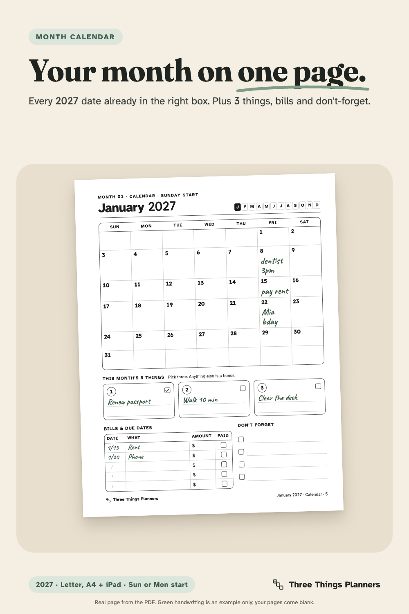
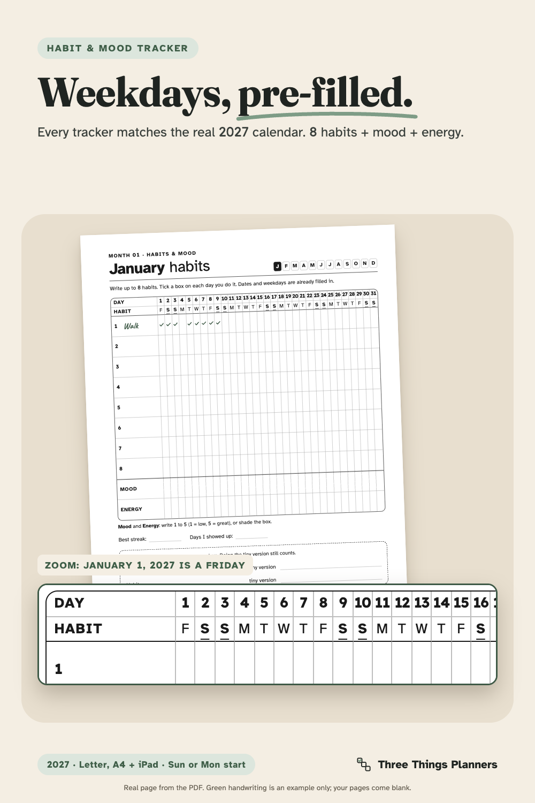
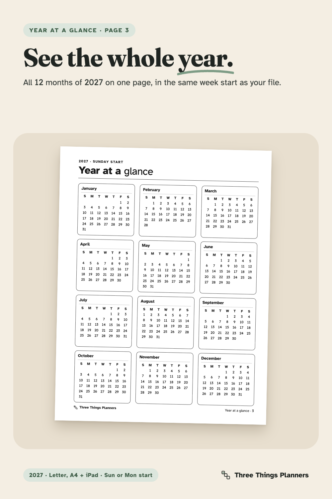
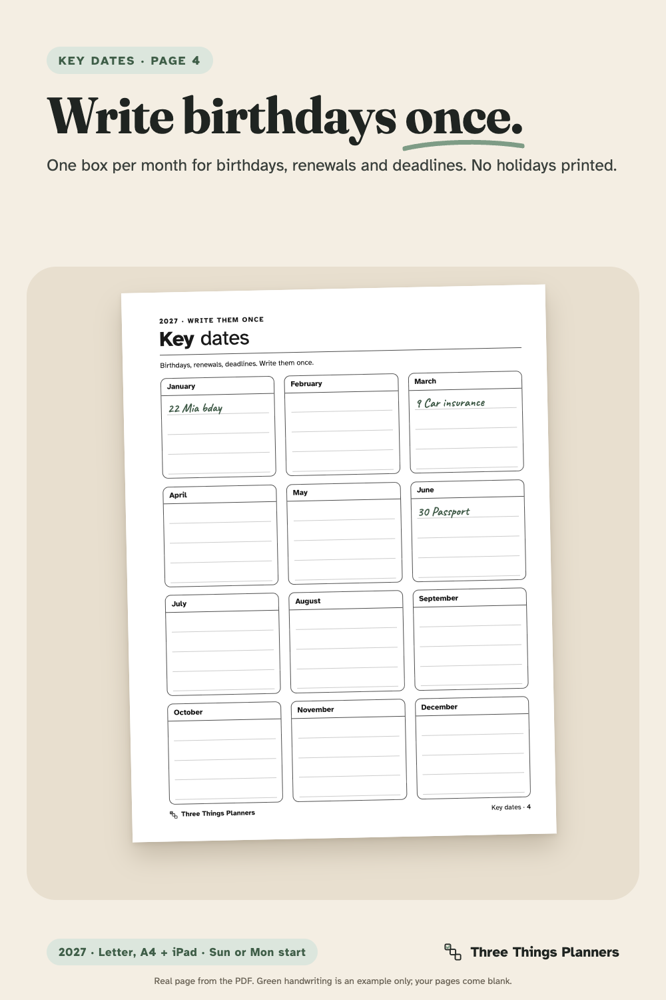
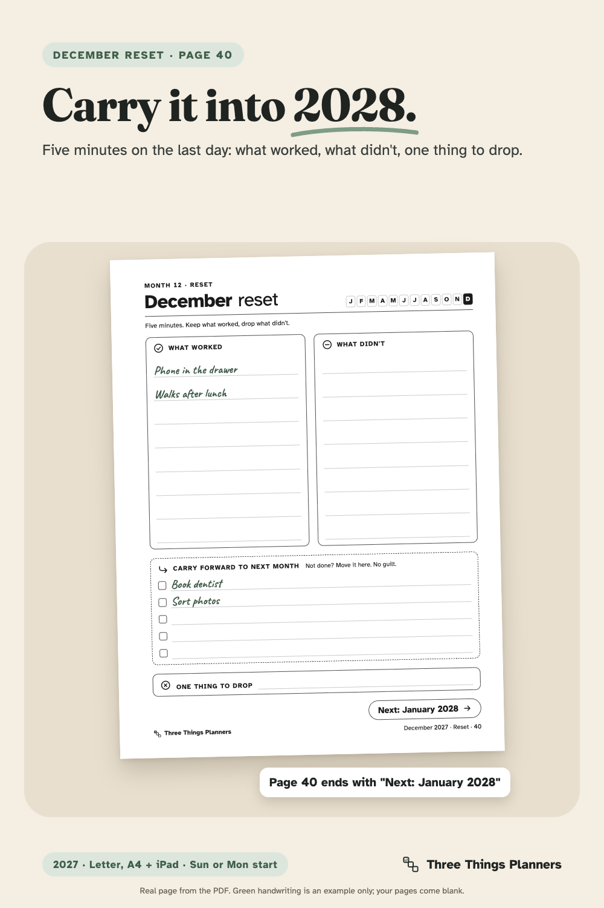
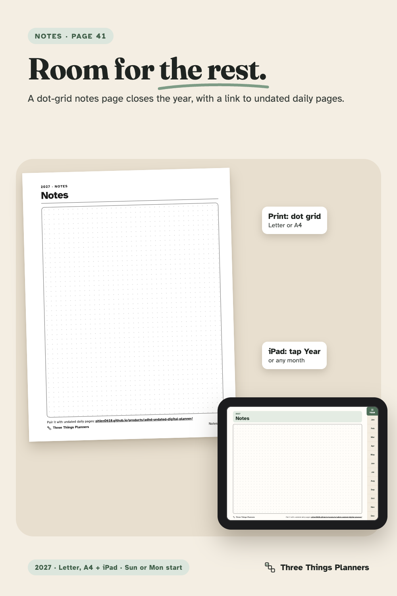
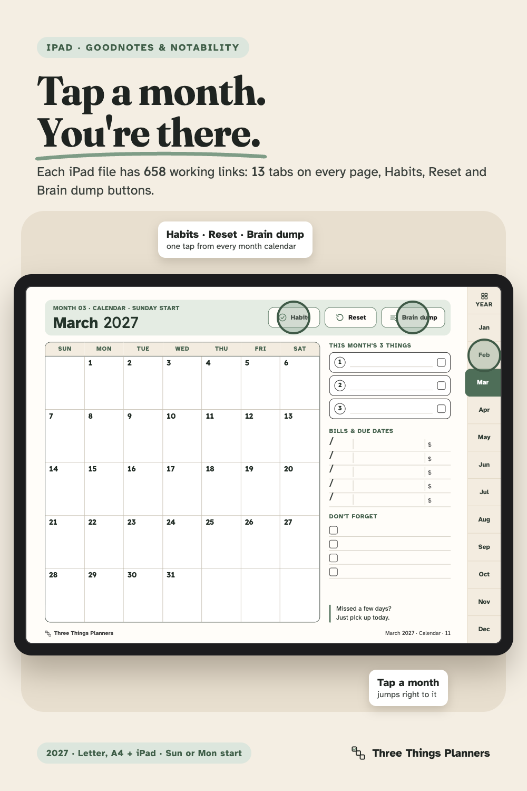
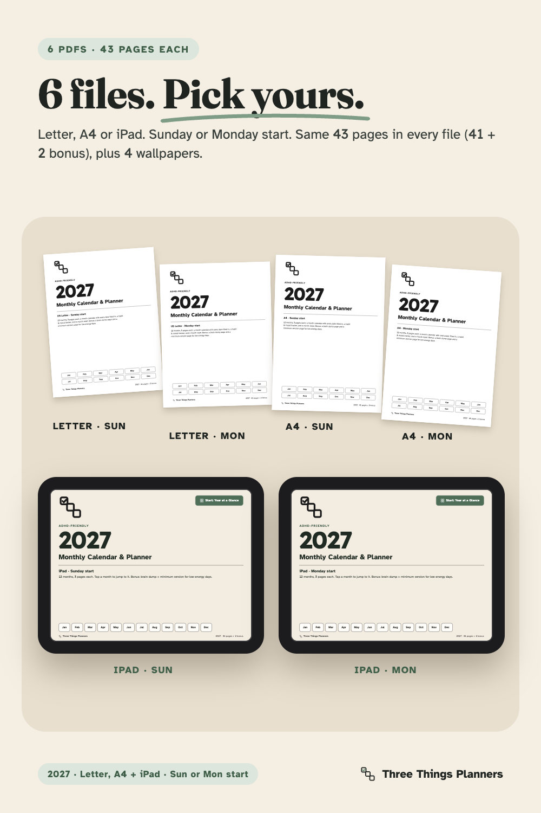
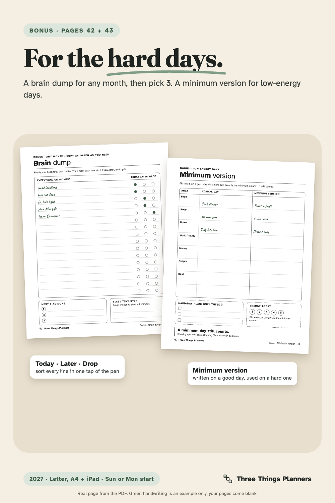
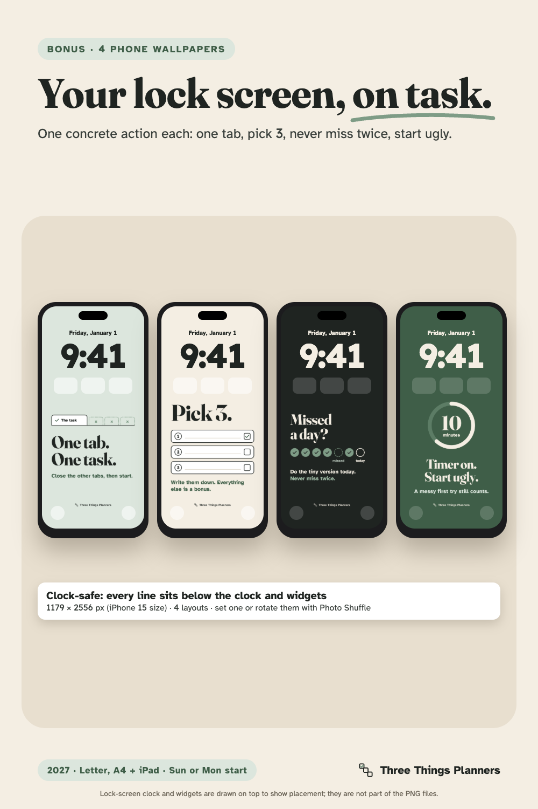
A 37-second screen recording of the real iPad pages and their links: Start, Year at a Glance, March, Habits, Minimum version, back to March, Brain dump, December, Reset, then the print versions.
Free calendar generators give you empty grids. Big 2027 planners give you about a hundred pages, and many of them stay blank. This calendar sits in between: just the pages that help you see the month, pay the bills on time and keep a habit going.
How a month works. On the 1st, open the month calendar and write this month's 3 things in the three boxes under the grid. Anything else is a bonus. Add bills and due dates in the 5-row table (date, what, amount, paid) and the dates you can't forget in the 4-row list. During the month, tick your habits on the habit & mood tracker; the dates and weekday letters are already printed, so you never have to draw 31 columns again. Missed a day? The page says it plainly: never miss twice, and a "tiny version" box helps on low-energy days. On the last day, the 5-minute month reset asks what worked, what didn't, what to carry forward (5 rows, no guilt) and one thing to drop. The page ends with "Next: February", and the December reset (page 40) says "Next: January 2028".
The year at a glance. Page 3 shows all 12 months of 2027 on one page, in the same week start as your file. Page 4, Key Dates, has a box for each month to write birthdays, renewals and deadlines once. Page 41 is a dot-grid notes page.
Two bonus pages for the hard days. Brain dump (page 42): one line per thought, a circle for Today, Later or Drop, the next 3 actions and one first step small enough to start in 2 minutes. Minimum version (page 43): Normal day vs. Minimum version for food, body, home, work / study, money, people, rest and one area of your own, a 3-line hard-day plan and an energy check from 1 to 5. Both are undated: print or duplicate them as often as you need.
Print or tap. The Letter and A4 files use black plus one light gray only, with no large color areas, so they print clearly in black and white and use little ink. The left margin is wider for a hole punch, and every page shows its real page number, so "print pages 5–7" gives you January. The iPad files are landscape 4:3 PDFs in a soft sage and oat palette, with tap targets of at least 44 px for GoodNotes, Notability and other PDF apps that support internal links.
Focus wallpapers. 4 PNG lock screens at 1179 × 2556 px, each with its own layout and one concrete action: "One tab. One task.", "Pick 3.", "Missed a day? Do the tiny version today." and "Timer on. Start ugly." The text sits below the lock-screen clock and widgets.
No holidays printed. Holidays differ by country and family, so none are printed. Add the ones you keep.
Pairs with undated pages. If you use our undated digital planner for daily pages, this calendar adds the dated 2027 month view next to it.
One ZIP download, 2027-ADHD-Monthly-Calendar_All-Files.zip, with 11 files: 7 PDFs and 4 PNG wallpapers. On your download page after payment, each file can also be downloaded on its own.
| File | Size | Pages |
|---|---|---|
2027-ADHD-Monthly-Calendar_Letter_Sunday-start.pdf | US Letter 8.5 × 11 in, portrait | 43 |
2027-ADHD-Monthly-Calendar_Letter_Monday-start.pdf | US Letter 8.5 × 11 in, portrait | 43 |
2027-ADHD-Monthly-Calendar_A4_Sunday-start.pdf | A4 210 × 297 mm, portrait | 43 |
2027-ADHD-Monthly-Calendar_A4_Monday-start.pdf | A4 210 × 297 mm, portrait | 43 |
2027-ADHD-Monthly-Calendar_iPad_Sunday-start.pdf | Landscape 768 × 576 pt, 658 internal links | 43 |
2027-ADHD-Monthly-Calendar_iPad_Monday-start.pdf | Landscape 768 × 576 pt, 658 internal links | 43 |
README.pdf | Which file to use, page map, print settings, GoodNotes and Notability import steps, wallpaper setup, personal-use license, no-holidays note, refund email | 2 |
Focus-Wallpaper-1 … -4 (.png) | 4 phone lock screens, 1179 × 2556 px | – |
Free separately: 2027-January-Free-Sample.pdf (US Letter, January only).
Is this a physical product?
No. It is an instant digital download: one ZIP with 7 PDFs and 4 PNG wallpapers, and each file is also downloadable on its own.
Which file should I use?
Printing in the US or Canada: Letter. UK, Europe or Australia: A4. On an iPad: the iPad file. Then pick Sunday start or Monday start. The README has a table, and all six calendar files have the same 43 pages.
Is the A4 version really laid out for A4?
Yes. The A4 files are built at 210 × 297 mm, not a shrunk Letter page. You can check before buying: the six-files image above shows each edition's cover, and you can print the free sample to test your printer.
Can I print just one month?
Yes. Each month is 3 pages in a row, and the page number is printed in every footer. January is pages 5–7, February 8–10 and so on up to December 38–40. Print at 100% / Actual size.
Do the links work in GoodNotes and Notability?
The iPad files use standard internal PDF links (658 per file). Import the PDF, then tap a tab or button. If a tap draws instead of jumping, switch GoodNotes to read-only mode or tap with your finger while the Apple Pencil draws. The Letter and A4 files are made for printing and have no tab links. If the links don't work in your app, you get a full refund.
Are holidays included?
No holidays are printed, because they differ by country and family. Write yours on the Key Dates page and on the month calendars.
Who is Three Things Planners? What if something goes wrong?
Three Things Planners is the planner imprint of Hustle Studio, a small new shop with its own website (not Etsy). There are no reviews yet. Email chenphien@gmail.com; we reply within 2 business days. Refunds are paid through Waffo Pancake, our merchant of record, to your original payment method.
This calendar is an organizing tool. It is ADHD-friendly by design and it is not medical advice. Personal use only.
$5.00 USD. One-time payment, instant download.
Buy now: $5 Free January sample (no email needed)You get one ZIP (about 7.9 MB) with 6 calendar PDFs, README.pdf and 4 wallpapers, each also downloadable on its own. Secure checkout by Waffo Pancake, our merchant of record (payment, tax and receipt). 14-day refund, no reason needed: email chenphien@gmail.com.